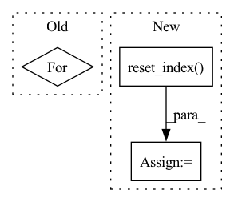

Pattern ID :8126
Before Change
activations = []
label_handle = []
for label in labels:
temp = pd.read_csv(f"{model_dir}{directory}/{label}_activations.csv")
activations.append(temp)
label_handle.extend([label] * len(temp))
After Change
df_class.to_csv(class_meta_filename, index=False)
print(f"{label} updated!")
// Accumulate non-null activations
temp = temp.dropna().reset_index(drop=True)
activations.append(temp)
// Confirm activations and metadata match
if len(temp) != len(df_class):In pattern: SUPERPATTERN
Frequency: 3
Non-data size: 3
Instances Fragment ID: 28749159
Project Name: stan-hua/cytoimagenet
Commit Name: 1ab297e870800b585b527efea61b1dad69bc8ee4
Time: 2021-08-03
Author: stanley.hua@mail.utoronto.ca
File Name: scripts/visualize_classes.py
M Class Name: AnonimousClass
N Class Name: AnonimousClass
M Method Name: create_umap(3)
N Method Name: create_umap(2)
M Parent Class:
N Parent Class:
M File Name: scripts/visualize_classes.py
N File Name: scripts/visualize_classes.py
M Start Line: 142
M End Line: 160
N Start Line: 142
N End Line: 192
Before Change
columns_ctx["all"]["base"] = columns
// Iterate, apply op, and check result
for gdf in dataset.to_iter():
new_gdf = merge_op.apply_op(gdf, columns_ctx, "all")
check_gdf = gdf.merge(df_ext_check, how=how, on=on)
assert len(check_gdf) == len(new_gdf)
assert (new_gdf["id"] + shift).all() == new_gdf["new_col"].all()After Change
dataset = nvt.Dataset(gdf)
processor = nvt.Workflow(joined)
processor.fit(dataset)
new_gdf = processor.transform(dataset).to_ddf().compute().reset_index()
check_gdf = gdf.merge(df_ext_check, how=how, on=on)
assert len(check_gdf) == len(new_gdf)
assert (new_gdf["id"] + shift).all() == new_gdf["new_col"].all() Fragment ID: 28749156
Project Name: nvidia/nvtabular
Commit Name: 4c92dffac4354d816178264bcfcdec722db2ec1c
Time: 2021-01-05
Author: github@benfrederickson.com
File Name: tests/unit/test_ops.py
M Class Name: AnonimousClass
N Class Name: AnonimousClass
M Method Name: test_join_external(8)
N Method Name: test_join_external(8)
M Parent Class:
N Parent Class:
M File Name: tests/unit/test_ops.py
N File Name: tests/unit/test_ops.py
M Start Line: 944
M End Line: 988
N Start Line: 548
N End Line: 590
Before Change
// Can directly compare the final ddf to the result if we didn"t shuffle
if not shuffle:
for col in df_disk:
assert_eq(result[col], df_disk[col])
else:
assert len(df0) == len(df_disk)
After Change
// a dask client with multiple workers - so we need to sort the values here
columns = ["label", "x", "y", "id"] + cat_names
got = result.sort_values(columns).reset_index(drop=True)
expect = df_disk.sort_values(columns).reset_index(drop=True)
assert_eq(got, expect)
@pytest.mark.parametrize("part_mem_fraction", [0.01]) Fragment ID: 28749154
Project Name: nvidia/nvtabular
Commit Name: 9218dd5b7d5244e860ddf45b637e3f482c157156
Time: 2021-02-10
Author: github@benfrederickson.com
File Name: tests/unit/test_dask_nvt.py
M Class Name: AnonimousClass
N Class Name: AnonimousClass
M Method Name: test_dask_workflow_api_dlrm(9)
N Method Name: test_dask_workflow_api_dlrm(9)
M Parent Class:
N Parent Class:
M File Name: tests/unit/test_dask_nvt.py
N File Name: tests/unit/test_dask_nvt.py
M Start Line: 93
M End Line: 122
N Start Line: 93
N End Line: 120